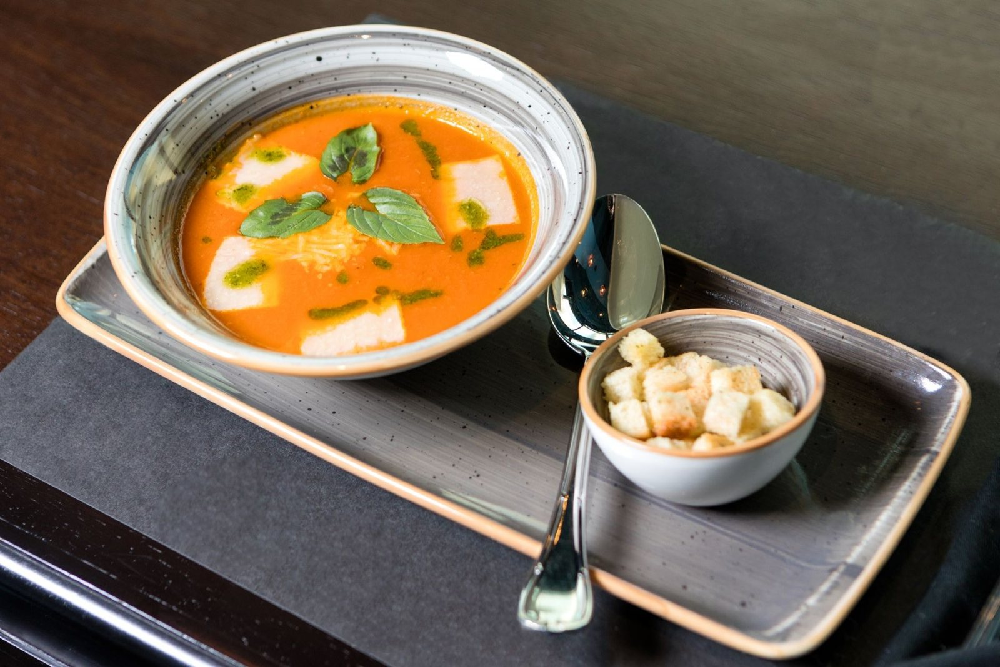
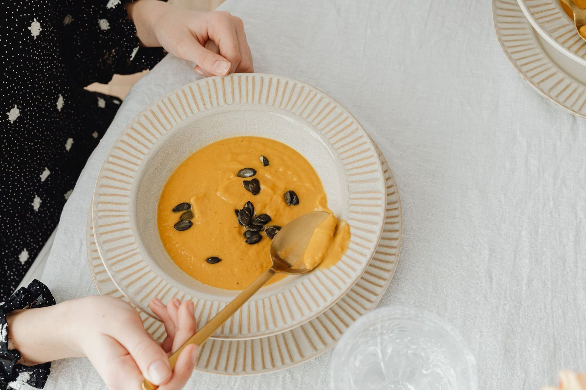

Mały bar przy Wilsona 2 w Tarnowie, w którym pierogi i obiady robi się na miejscu.

Bar Pierożek „ABIS” działa przy Wilsona 2 w Tarnowie, od poniedziałku do soboty. Nie ma tu fajerwerków - jest za to talerz gorących pierogów i domowy obiad, na który wpada się w przerwie od codziennych spraw.
Ciasto wałkujemy i pierogi lepimy na miejscu, a zupy i dania gotujemy każdego dnia od rana. Jeśli szukasz miejsca na szybki, sycący obiad bez zbędnego czekania - zapraszamy do środka.
Wpadnij i spróbuj naszej kuchni - codziennie świeże pierogi i obiady.